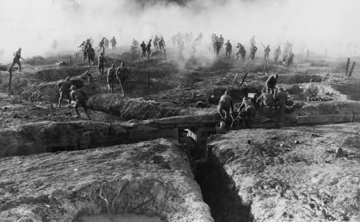

IF YOU CAN SEE THIS TEXT, YOU NEED TO ENABLE JAVASCRIPT FOR MANY FUNCTIONS OF THIS SITE
After an assassination of an important Austro-Hungarian, the major militaries of Europe would mobilize and begin the war to end all wars. A new style of warfare was adopted during this war, where both sides dug in for a war of attrition and stagnation. And unlike other wars, it wasn’t just a soldiers war, but a war that used the entire nation.